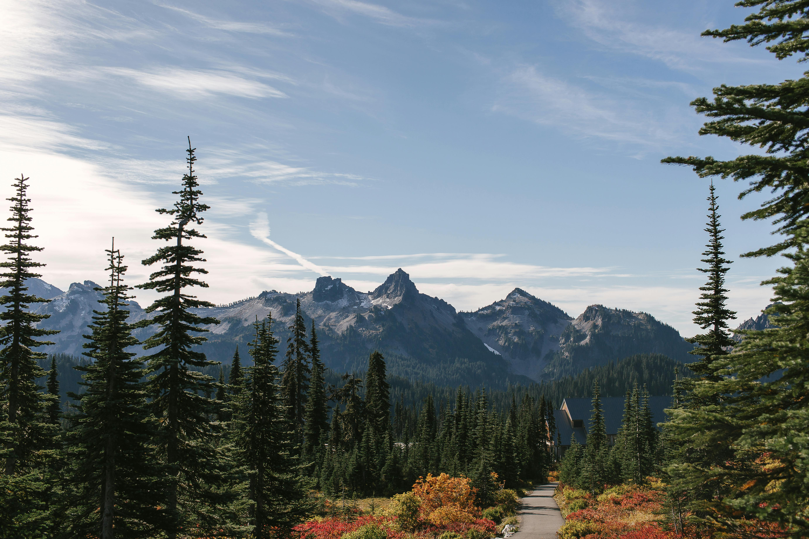
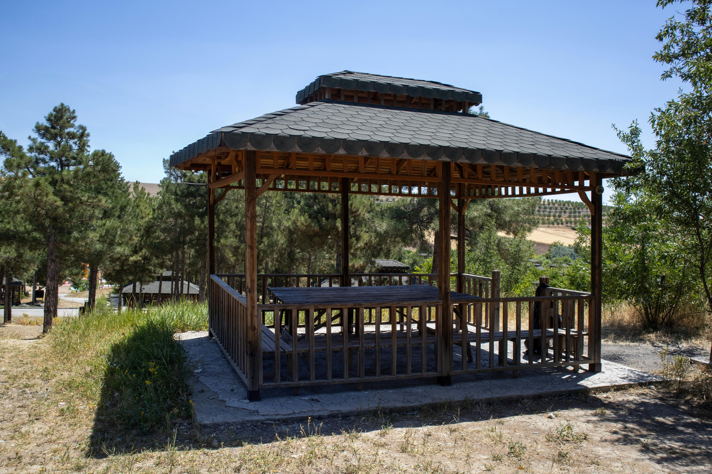
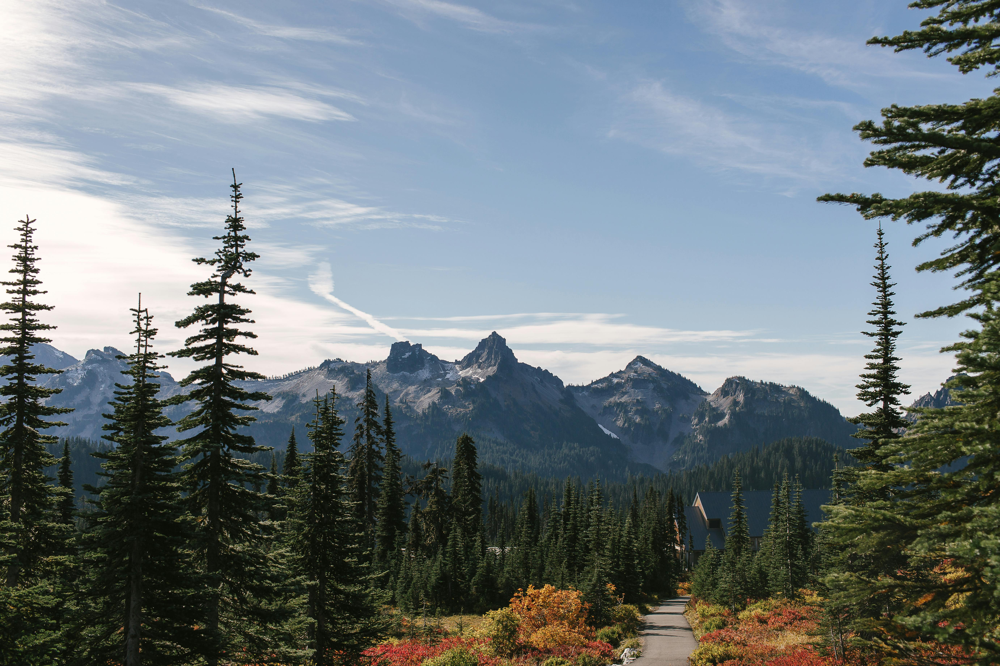
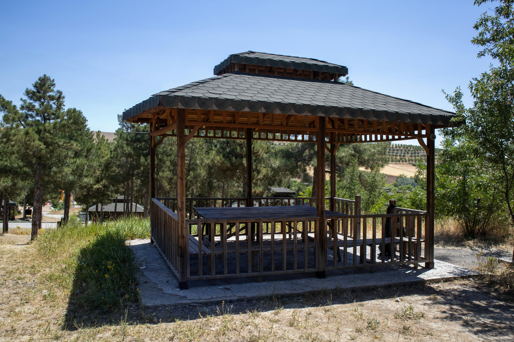
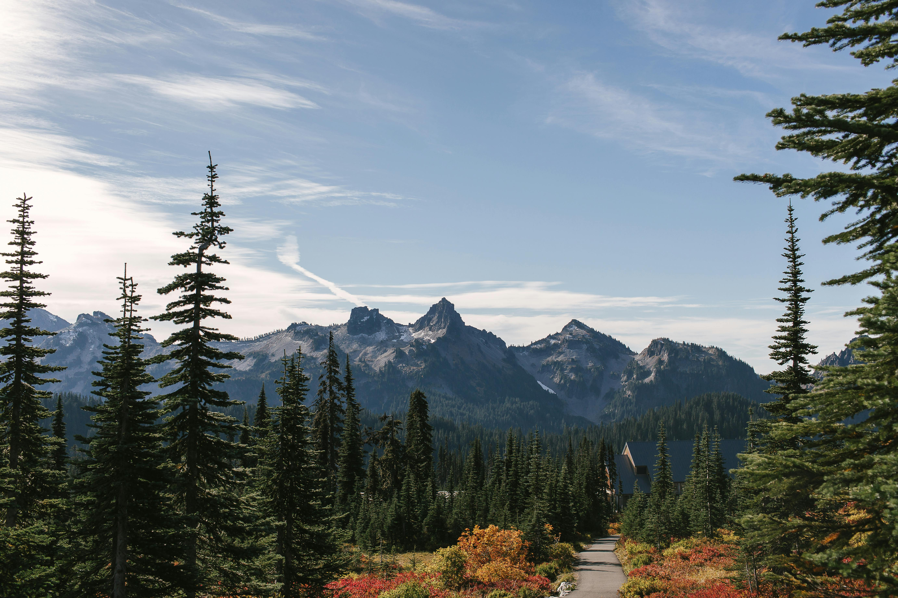
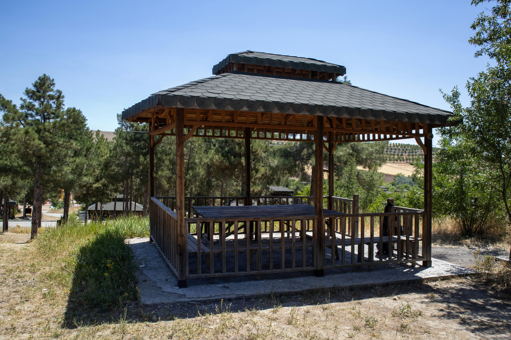

La Casa
 



Nuestra casa de descanso ofrece comodidad y tranquilidad, con amplios espacios, jardín, mirador y todas las comodidades modernas. Ideal para relajarte con familia o amigos.
Escapa de la rutina en nuestra acogedora casa rodeada de naturaleza.


Nuestra casa de descanso ofrece comodidad y tranquilidad, con amplios espacios, jardín, mirador y todas las comodidades modernas. Ideal para relajarte con familia o amigos.
Visita la Pirámide del Tepozteco, sube al Cerro del Tepozteco y explorar el Ex Convento de la Natividad, camina por el Mercado de Artesanías, y conoce el Museo de Arte Prehispánico Carlos Pellicer.
Hermosas calles empedradas, artesanías y deliciosa comida típica.
Ven a conocer el Centro Vacacional Oaxtepec y Six Flags.
Visita el Centro Cultural Sor Juana Inés de la Cruz en Nepantla, la Parroquia de San Esteban Protomártir, la Ex Hacienda de Atlapango y el Parque Ecoturístico Municipal Sor Juana Inés de la Cruz.
La ciudad de la Eterna Primavera con infinidad de balnearios.
A continuación, te mostramos las rutas y los tiempos de viaje desde la casa hacia los sitios turísticos: Tepetlixpa, Yecapixtla y Cuernavaca.